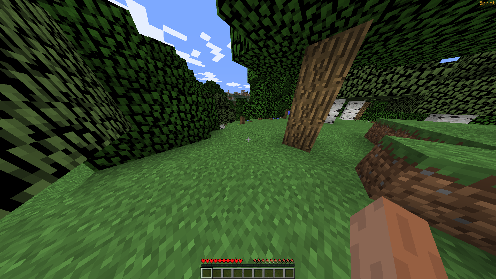
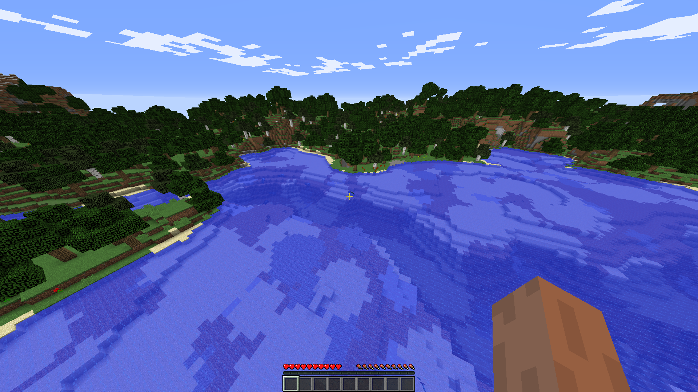
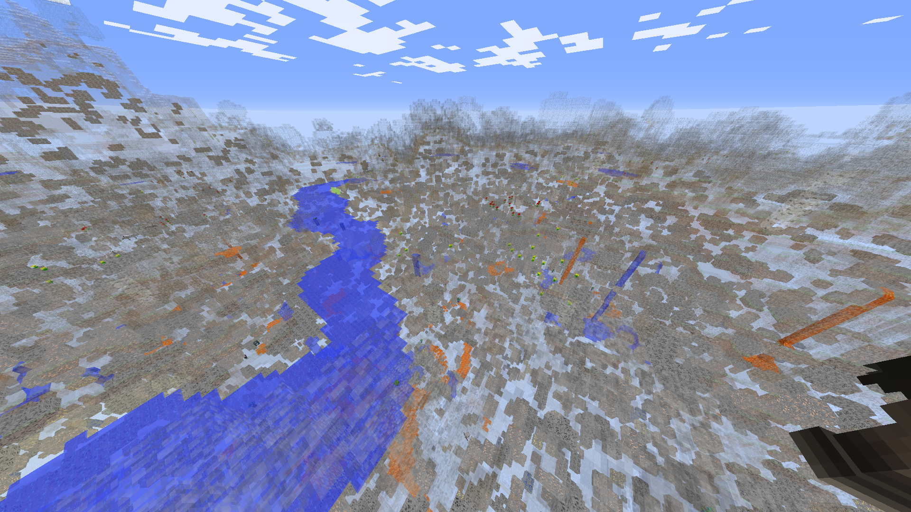
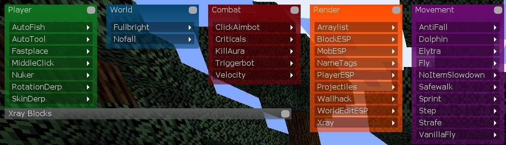
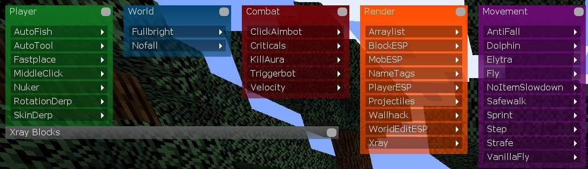

Чіт коди в майнкрафт
|
| /gamemode 0, 1, 2 |
позволяет изменить игровой режим на Survival, Creative и Adventure, соответственно. |
| /time set, add [кол.во времени] |
позволяет изменить время в игре на произвольное (0 — утро, 6000 — полдень, 12000 — вечер, 18000 —
полночь). |
| /xp [кол.во опыта] |
прибавляет указанное количество опыта. |
| /give [id предмета] [кол.во] |
позволяет получить указанные блоки в нужном количестве. |
| /toggledownfal |
включает или отключает — снег, дождь. |
| /tp [игрок 1] [игрок 2] |
телепортирует игрока номер один, к игроку номер два — вместо игрок 1 и 2 писать ники персонажей.
|
| /publish |
делает ваш мир доступным для подключения по локальной сети — выводит в чат порт и имя компьютера на
котором он запущен. |
| /spawnpoint [имя игрока] [x] [y] [z] |
устанавливает точку спавна для указанного игрока, по координатам — если они указаны, если не указаны
—
спавном устанавливается текущая позиция. |
| /effect [имя игрока] [эффект] [длительность] [уровень] |
накладывает на указанного игрок эффект с произвольной длительностью и уровнем — длительность эффекта
по
умолчанию, 30 секунд. |
| /enchant [имя игрока] [эффект] [уровень] |
команда позволяет зачаровать предмет, которыйигрок держит в руках на произвольный эффект. |
Список функций:
AutoFish - автоматическая ловля рыбы, просто закинь удочку.
AutoTool - автоматически берет в руки правильный инструмент из вашего хотбара.
FastPlace - позволяет устанавливать блоки быстрее.
MiddleClick - позволяет добавлять друзей на центральную клавишу мыши.
Nuker - позволяет сломать все вокруг в радиусе 4 блока, но нужен креатив, без него отлично ломает траву.
RotationDerp - вращает голову (только для других игроков)
SkinDerp - включение\отключение вашего скина.
Fullbright - полная яркость, видно в темноте
Nofall - убирает урон от падения.
AntiFall - предотвращает падение более чем на 3 блока, но требует наличия NoCheatPlus на сервере.
Dolphin - позволяет плавать за вас
Elytra - позволяет летать на элитре вверх.
Flight - позволяет летать (не работает на серверах)
NoItemSlowdown - позволяет использовать лук, щит, еду на полной скорости движения.
SafeWalk - предотвращает падение с края блока
Sprint -автоматический спринт

Step - какой то странный прыжок
VanillaFly - на серверах без античитов позволит летать в 8 раз дольше.

ClickAimbot - позволяет эффективно атаковать врагов, на доступном расстоянии и позволяет не прицеливаться
для удара, имеет команды для отключения разных категорий, игроки, мобы, животные.
Criticals - во время атаки вы совершите маленький прыжок который позволит нанести критический урон.
KillAura - автоматически ударяет сущности вокруг вас, позволяет настроить список сущностей.
TriggerBot - автоматически атакует цели если зажата левая клавиша Alt.
Velocity - позволяет изменять количество ударов которые вы выполняете при ударе.
Xray - позволяет подсвечивать определенные блоки, есть специальное меню которое позволяет указать блоки.

Arraylist - список включенных модулей
BlockESP - позволяет подсвечивать опредеелнные добавленные блоки.
MobESP - показывает мобов сквозь стены
NameTags - показывает имя игрока и его здоровье и броню.
PlayerESP - показывает игроков сквозь стены
Projectiles - показывает траекторию стрел, снежков, яиц.
Wallhack - позволяет видеть сквозь стены.
WorldEditESP - отображает выделенную ворлд эдитом территорию
 
